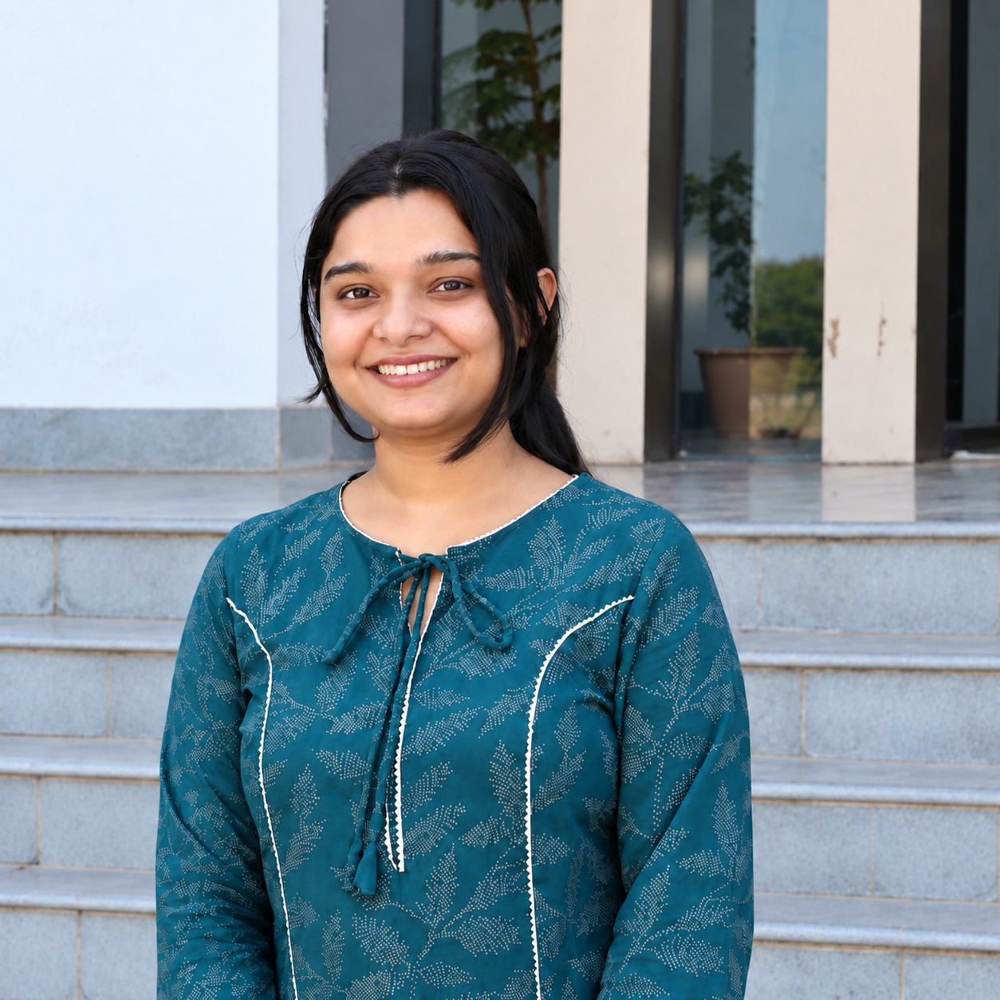

Adaptability
Adjusting to changing hiring needs and day-to-day HR tasks.
↗Kiran Sharma · HR experience across recruitment coordination, onboarding, payroll support and Excel-based reporting, complemented by editorial strengths in documentation and stakeholder communication.

People matter.
So does the work around them.
A background in biotechnology and editorial operations brings analytical thinking, structured documentation and clear stakeholder communication. HR internship experience includes candidate sourcing, resume screening, student and campus placement coordination, interview scheduling, hiring follow-ups, onboarding support, payroll support and Excel-based HR reporting. Currently pursuing an MBA in HR & Finance, with an interest in connecting people, processes and workforce insights.
Five strengths that support my work and continued learning in HR.
Adjusting to changing hiring needs and day-to-day HR tasks.
↗Building practical HR knowledge through postgraduate study and hands-on coordination experience.
↗Approaching candidate and employee interactions with consideration.
↗Handling confidential HR documents and employee records responsibly.
↗Supporting accurate joining documentation, records and HR reports.
↗Experience across HR internship responsibilities and editorial operations, with transferable strengths in coordination, documentation and workflow management.
AllSure Services Pvt Ltd
Supported recruitment for college students, including candidate sourcing, resume screening, student coordination, campus placement coordination, interview scheduling and hiring follow-ups. Also supported employee onboarding, HR documentation, payroll activities, Excel-based HR reporting and routine HR coordination.
MAT JOURNALS Pvt Ltd
Managed communication and coordination with authors, reviewers and stakeholders across deadline-driven workflows, while maintaining records, documentation and workflow tracking through OJS and CRM tools.
An overview of recruitment and HR operations workflows, informed by internship exposure and continued professional learning.
Identify and source relevant candidates for open roles.
Practical experience supporting hiring, onboarding, payroll and Excel-based HR reporting.
Four self-initiated case studies designed to demonstrate practical HR problem-solving—from workforce analysis and recruitment flow to onboarding and candidate communication. Each project is clearly marked as in development until its work samples are completed.
Academic experiences that shaped the way I approach research, analysis, communication and people-focused work.
Banasthali Vidyapith
Built a foundation in scientific observation, structured thinking and attention to detail.
Banasthali Vidyapith
Developed deeper experience in research, analysis, documentation and evidence-based thinking.
Symbiosis International University · Pursuing
Currently pursuing studies in human resources, organisational processes, finance and people-focused decision-making.
Different disciplines.
One evolving foundation.
Open to opportunities in Talent Acquisition, HR Operations, HR Generalist and HR Analytics.